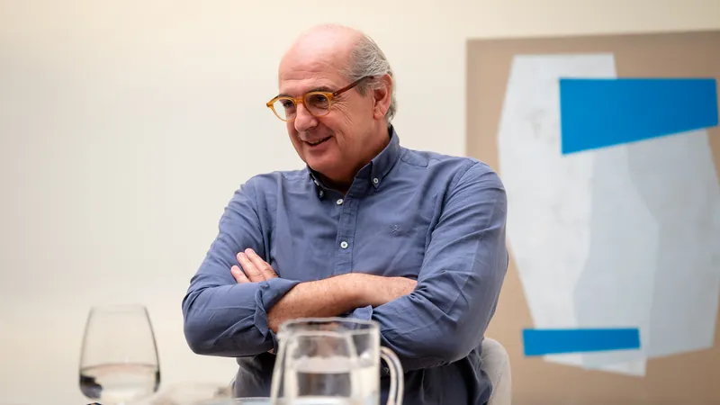

Episodio 02
Hacer empresa · VICIO
“Elegir es renunciar”: la decisión que ayudó a transformar una pequeña empresa en una marca de éxito
VICIO empezó vendiendo pizzas y hamburguesas hasta que decidió concentrarse en un solo producto. Banco Sabadell recupera esta historia de decisiones y aprendizajes en su serie Hacer empresa
Intervienen en la conversación
-
Oriol (Uri) de Pablo
CEO & Co-Founder de VICIO
-
Mariano Citterio
Chef ejecutivo de VICIO
-
Luis Daniel García
Creador de la comunidad Riders España (@ridersespana)
-
Francesc Escuert
Key Account Manager en Distribuidora Joan S.A., proveedora del packaging de VICIO
En aquella primera cocina, conectar una freidora más podía significar tener que apagar el aire acondicionado. Los cables recorrían las paredes y, entre hamburguesas, pedidos y mucha improvisación, un pequeño equipo intentaba sacar adelante un negocio que todavía tenía todo por demostrar. Hoy, aquella precariedad forma parte de los recuerdos de VICIO, la cadena de hamburgueserías que nació en Barcelona y que ha conseguido hacerse un nombre en el sector de la restauración. En su historia hay decisiones arriesgadas, errores y renuncias, pero también personas que decidieron confiar en el proyecto cuando su futuro era incierto.
Pero ¿qué hay detrás de una empresa que logra abrirse camino? ¿Qué decisiones marcan su futuro? ¿Y qué papel desempeñan quienes confían en una idea cuando todavía no existen garantías de que vaya a funcionar? Estas son algunas de las cuestiones que plantea Hacer empresa, una nueva serie de seis episodios, impulsada por Banco Sabadell, que explora los momentos decisivos de diferentes proyectos empresariales.
La segunda entrega reúne a Oriol de Pablo, CEO & Co-Founder de VICIO, con tres personas que han formado parte de su trayectoria: Mariano Citterio, su chef ejecutivo; Luis Daniel García, creador de la comunidad Riders España (@ridersespana); y Francesc Escuert, Key Account Manager en Distribuidora Joan S.A., empresa proveedora del packaging de VICIO. “Vosotros apostasteis por este proyecto, apostasteis por nosotros, por VICIO, cuando no había ninguna garantía para hacerlo”, les reconoce Oriol. Una declaración que resume el espíritu de este encuentro: descubrir cómo se construye una empresa a través de las decisiones de sus impulsores y del compromiso de quienes contribuyen a hacerla crecer.
Empezar sin tener todas las respuestas
Antes de VICIO hubo un proyecto empresarial que no salió adelante. Oriol de Pablo, conocido por su círculo íntimo como Uri, había trabajado en un proyecto de tecnologías asistivas para personas mayores y conocía de primera mano lo que significaba enfrentarse a un fracaso. Lejos de ocultarlo, entiende que aquella experiencia fue parte del aprendizaje que le permitió afrontar su siguiente aventura empresarial. “Nos construimos de errores”, explica durante la conversación.
10.000 €
Cuando él y Aleix Puig, también cofundador de VICIO, decidieron emprender, contaban con 10.000 euros cada uno y una idea que todavía estaba por desarrollar. No tenían experiencia en una cocina profesional, pero sí la determinación de poner en marcha el negocio. El chef Mariano Citterio recuerda aquellos comienzos con una mezcla de humor y complicidad. Las limitaciones de espacio, los problemas eléctricos o la necesidad de improvisar soluciones eran parte de la rutina. También lo era el entusiasmo de un equipo que aprendía mientras trabajaba.
Porque emprender no significa necesariamente saber hacerlo todo desde el principio. “Ser CEO no significa que debas tener todas las respuestas”, reconoce Uri. Saber escuchar, aprender de los errores y rodearse de personas que aporten otros conocimientos también forma parte del camino.

“Ser CEO no significa que debas tener todas las respuestas”
Oriol de Pablo, CEO & Co-Founder de VICIO
Elegir un camino significa renunciar a otros
VICIO no empezó vendiendo únicamente hamburguesas. En sus inicios, la propuesta incluía también pizzas, pero pronto comprobaron que hacer convivir ambos productos planteaba dificultades operativas y, sobre todo, complicaba la construcción de una identidad propia. Una pizzería y una hamburguesería respondían a conceptos diferentes, con formas distintas de entender el producto y de relacionarse con el consumidor. Había que elegir dónde concentrar los esfuerzos y qué personalidad querían dar a la marca.
La decisión de concentrarse en las hamburguesas implicaba dejar atrás una parte de la propuesta inicial. Y no era una elección menor para una empresa que apenas comenzaba su recorrido. “Elegir es renunciar, y cuando eliges algo estás dispuesto a asumir la peor de las consecuencias de la decisión que no has tomado”, reflexiona Uri. Una idea que trasciende la historia de VICIO y plantea uno de los grandes dilemas de cualquier proyecto empresarial: entender que crecer no siempre consiste en hacer más cosas, sino en decidir cuáles merecen realmente los esfuerzos y los recursos disponibles.
La decisión
Episodio 02 · VICIO
Dejar las pizzas para centrarse solo en las hamburguesas
“Elegir es renunciar, y cuando eliges algo estás dispuesto a asumir la peor de las consecuencias de la decisión que no has tomado”
Oriol de Pablo, CEO & Co-Founder de VICIO
En ese proceso también fue fundamental Mariano, que venía del mundo de la alta gastronomía. Se incorporó a VICIO en sus comienzos, pero después decidió marcharse para regresar a las cocinas de las que procedía. Sin embargo, siempre sintió que había dejado algo pendiente en aquel proyecto. “Tuve la gran suerte de que Uri me contactó y para mí fue volver a casa”, recuerda el chef.
Su regreso también suponía un desafío profesional: trasladar el conocimiento y las técnicas de la alta gastronomía a una propuesta aparentemente sencilla como una hamburguesa, pero pensada para llegar a miles de clientes. A diferencia de la alta cocina, donde cada plato requiere una elaboración más individualizada, en VICIO el reto es organizar los procesos para reproducir las recetas de manera consistente y mantener la calidad en cada pedido. “Más cabeza y menos manos”, como lo define Mariano. Porque detrás de una hamburguesa hay decisiones sobre ingredientes, técnicas de elaboración y organización que no siempre resultan evidentes. “Una gran simplicidad externa cobija una gran complejidad interna”, explica el chef.
“Una gran simplicidad externa cobija una gran complejidad interna”
Mariano Citterio, chef ejecutivo de VICIO
La confianza de quienes estuvieron desde el principio
Una empresa también se construye gracias a quienes deciden acompañarla. Y la conversación recupera algunas de esas relaciones que, con el tiempo, han adquirido un significado especial. La importancia de los vínculos personales también estuvo presente en la construcción de la identidad visual de VICIO. Oriol recuerda que el primer logotipo y la imagen gráfica de la marca nacieron de la colaboración de un amigo al que había conocido durante su etapa de estudiante en Londres. Un ejemplo de cómo, en los comienzos, una relación de confianza puede aportar tanto como los recursos económicos.
Francesc Escuert recuerda la sorpresa que provocaron las exigencias de VICIO cuando comenzaron a trabajar juntos. Querían un packaging de gran calidad, cuidado incluso por dentro, con mensajes y una identidad visual propia. Aquella apuesta implicaba dificultades de producción y una atención a los detalles poco habitual, pero decidió implicarse en el proyecto.
“Vi una excitación, una cosa tan diferente en muchos aspectos que yo quería que esto saliera bien”, recuerda. Hoy, al mirar atrás, habla de VICIO con un afecto que va más allá de lo profesional: “Para mí VICIO es como mi quinto hijo”.
“Para mí VICIO es como mi quinto hijo”
Francesc Escuert, Key Account Manager en Distribuidora Joan S.A.
La relación con Luis Daniel García, que comenzó como repartidor, aporta otra perspectiva. Recuerda cómo descubrió que algunos establecimientos de VICIO ofrecían agua y enchufes para los riders, pequeños gestos que podían marcar una gran diferencia en su jornada de trabajo. Uri reconoce la importancia de quienes entregan los pedidos y representan a la marca ante el cliente. Una relación que demuestra que cuidar a las personas también puede convertirse en una forma de entender el negocio.
Ninguna historia de éxito se escribe en solitario
A lo largo de la conversación aparecen recuerdos, anécdotas y agradecimientos. También una idea compartida: detrás de cada decisión empresarial hay personas que aportan conocimientos, esfuerzo y confianza, aunque no siempre ocupen el primer plano.
“Una mano no aplaude sin la otra”, afirma Uri al hablar del trabajo en equipo. Mariano, por su parte, resume su relación con la empresa con una frase que refleja hasta qué punto aquel proyecto se ha convertido también en algo personal: “Mi árbol es VICIO”.
La historia de VICIO recuerda que hacer empresa no consiste únicamente en tener una buena idea o acertar con una estrategia. También exige aprender de los errores, asumir renuncias y conseguir que otras personas crean en un proyecto y lo hagan suyo.
“Creo que todavía no hemos hecho nada de lo que hemos venido a hacer. El recorrido que tiene VICIO por delante es tremendo”, afirma Uri. Porque el éxito no significa necesariamente haber llegado a la meta. Quizá esa sea una de las lecciones de esta conversación de Hacer empresa: las decisiones pueden cambiar el rumbo de un negocio, pero son las personas quienes hacen posible llevarlas adelante.
Sigue la serie
Ver todos los episodios de Hacer empresa →
← Episodio anterior · 01
NOX
Emprender a los 40 y desafiar las dudas
Siguiente episodio · 03
Disponible el
Hacer empresa es una serie de seis conversaciones en vídeo, impulsada por Banco Sabadell, que explora los momentos decisivos de diferentes proyectos empresariales.
En colaboración con